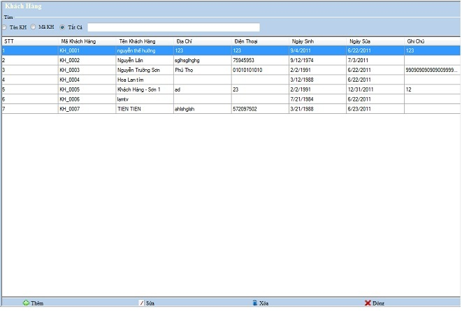
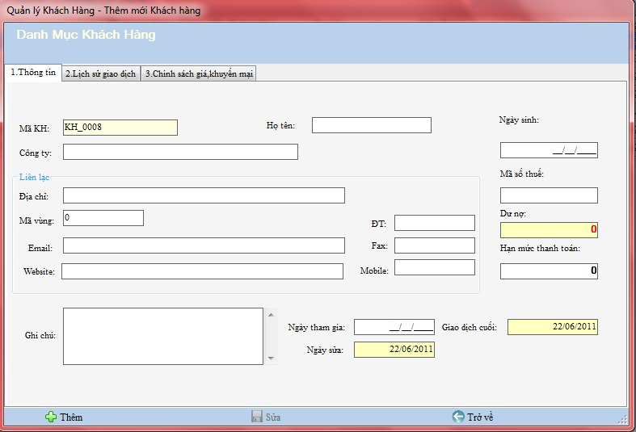
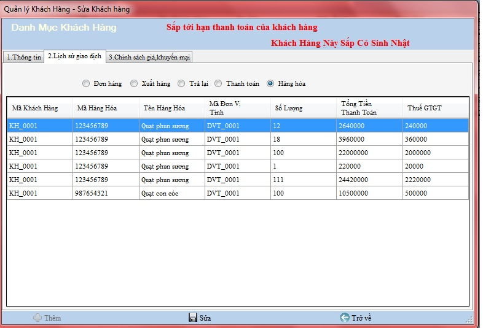
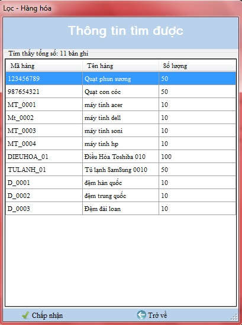
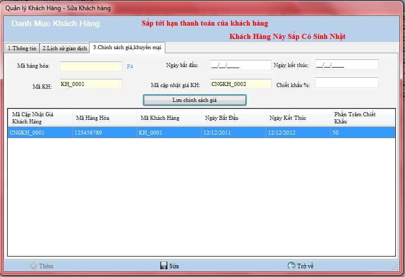

- Bạn là người quản lý, bạn muốn quản lý những khách hàng thân thiết của doanh nghiệp mình thật chi tiết, thì bạn hãy sử dụng chức năng này để quản lý khách hàng của mình một cách hiệu quả nhất
Cách thao tác với Danh mục quản lý khách hàng:
Vào Hệ thống -> Danh mục khách hàng

Thanh tiêu đề: Chứa tên của danh mục đang làm việc.
Tìm kiếm: Chọn loại muốn tìm kiếm , bạn nhập vào tên hàng cần tìm .
Thanh công cụ : Chứa các công cụ phục vụ việc quản lý,theo dõi, bổ sung khách hàng
a.Thêm mới
Chọn nút thêm và khai báo các thông tin trên hộp thoại xuất hiện .
- Không thể chọn trang 2. Lịch sử giao dịch và trang 3.Chính sách giá khuyến mại,
để xem các danh mục có liên quan đến khách hàng vì Khách hàng khi đó đang được tạo mới và các giao dịch chưa được thiết lập.

Điền thông tin của danh mục theo hướng dẫn,những ô bắt buộc phải nhập nếu bạn để trống hệ thống sẽ báo lỗi như hình sau:

VD: Bạn cần phải nhập họ tên khách hàng...
Chọn Thêm để chấp nhận thêm mới
b.Sửa
Chọn hàng cần sửa và đúp chuột vào nút Sửa ở thanh công cụ dưới hoặc kích đúp vào Khách hàng hiện thời, hộp thoại sẽ xuất hiện và sửa lại thông tin cho hàng đang chọn.
- Dư nợ được tổng hợp từ các giao dịch với Khách hàng.
- Ở đây, sẽ có những khách hàng đã nợ gần quá hạn thanh toán và có khách hàng sắp tới ngày sinh nhật của khách hàng đó. Hệ thống sẽ hiển thị để nhắc nhở người quản lý, sẽ có giao diện như hình sau:

- Nhập dữ liệu vào ô cần sửa trên danh mục khách hàng
- Chọn nút Sửa ở thanh công cụ dưới để hoàn thành thao tác
c.Xóa
Chọn hàng cần xóa và đúp chuột chọn nút Xóa
d.Lịch sử giao dịch
Bước 1: Chọn hàng cần xem chi tiết lịch sử giao dịch, kích đúp vào khách hàng hiện thời
Bước 2: Chọn trang 2. Lịch sử giao dịch

Bước 3: Chọn Đơn hàng để xem thông tin chi tiết danh sách giao dịch Khách hàng đặt hàng.
Bước 4: Chọn Xuất hàng để xem thông tin chi tiết danh sách giao dịch bán hàng cho Khách hàng.
Bước 5: Chọn Trả lại để xem thông tin chi tiết danh sách giao dịch Khách hàng trả lại.
Bước 6: Chọn Thanh toán để xem thông tin chi tiết danh sách giao dịch thanh toán với Khách hàng.
Bước 7: Chọn Hàng hóa để xem thông tin chi tiết danh sách hàng hóa Khách hàng đã mua.
e.Chính sách giá khuyến mại
Bước 1: Chọn khách hàng cần thêm chính sách giá khuyến mại hoặc xem chi tiết khuyến mại của khách hàng , kích đúp vào khách hàng hiện thời.
Bước 2: Chọn trang 3.Chính sách giá khuyến mại
Bước 3: Ô Mã hàng hóa chọn F4 để chọn hàng hóa khuyến mại trên hộp thoại xuất hiện

Bước 4: Nhập các thông tin chính sách giá khuyến mại vào các ô trên hộp thoại

Bước 5: Chọn nút Lưu chính sách giá
- Khi dữ liệu xuất hiện phía dưới nghĩa là bạn đã thêm thành công chính sách giá khuyến mại cho khách hàng đó.
Bước 6: Chọn Trở về ở thanh công cụ dưới để trở về Danh mục quản lý khách hàng.